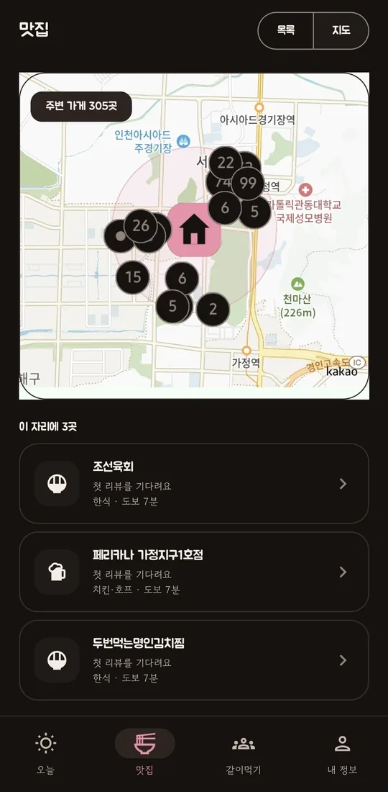
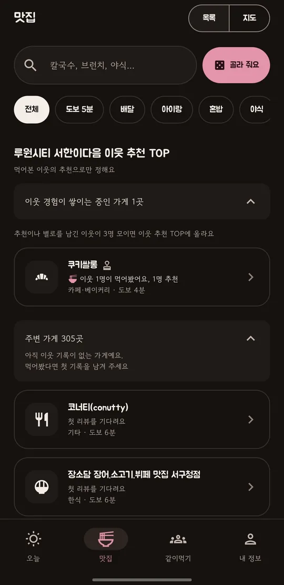
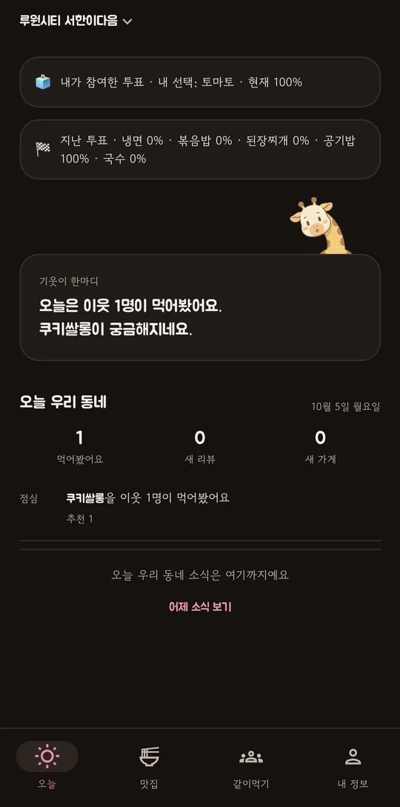
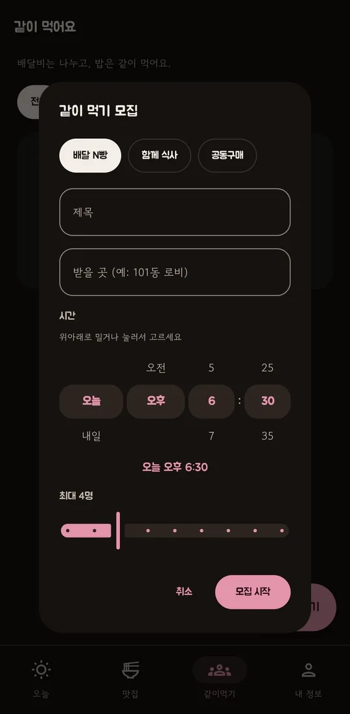

목록이웃이 추천한 가게가
이웃이 추천한 가게가
먼저 보여요
우리 단지 이웃이 먹어본 곳부터 모아 보여 줘요. 이웃의 기록이 쌓이면 가게가 우리 동네 순위에 올라요.

오늘오늘 우리 동네,
오늘 우리 동네,
무슨 일이 있었을까
이웃이 먹어본 곳, 새로 올라온 한마디, 새 가게 소식을 짧게 모아 전해요. 열어서 기웃거리고, 정하면 닫으면 돼요.

같이 먹기혼자 시키기엔 아쉬울 때,
혼자 시키기엔 아쉬울 때,
이웃과 같이
배달 N빵, 함께 식사, 공동구매를 이웃과 모아 보세요. 정원이 차면 자동으로 확정되고, 원하지 않으면 언제든 취소할 수 있어요.

별점의 빈칸
별 4.8이 말해 주지 않는 것
누가, 얼마나 가까이 살면서, 몇 번이나 가 봤는지는 별점에 없어요. 기웃기웃은 그 빈칸을 이웃으로 채워요.
흔한 별점
★★★★★ 4.8
“맛있어요 또 올게요”누구인지 알 수 없는 리뷰
“친절하고 깔끔해요”언제 다녀온 건지 알 수 없는 리뷰
기웃기웃
😋 이웃 7명이 먹어봤어요
같은 아파트 이웃“국물이 진해서 비 오는 날 생각나요”
이웃“혼자 가도 눈치 안 보여요”
※ 화면 예시예요. 실제 가게·후기가 아니에요.
한 바퀴기웃거리다, 먹어보고,
기웃거리다, 먹어보고,
남기고, 다시 기웃
👀
기웃거려요
지도에서 가게를 구경해요.
😋
먹어봤어요
다녀왔다면 버튼 하나로 기록해요. 별점은 없어요.
💬
한마디 남겨요
길게 쓰지 않아도 돼요. 한 줄이면 충분해요.
❤️
이웃이 반응해요
반응이 쌓이면 다른 이웃이 다시 기웃거려요.
직접 눌러 보세요
우리 동네를 기웃거려 볼까요?
가게를 누르고 ‘먹어봤어요’를 눌러 보세요. 이웃 기록이 5개를 넘으면 가게가 분홍색으로 바뀌어요.
가게
가게마다 이웃의 한마디가 달라요.
※ 체험용 예시 데이터예요.